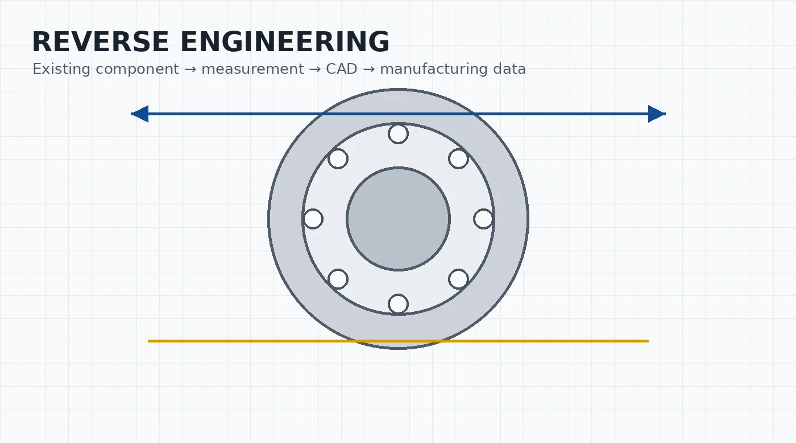
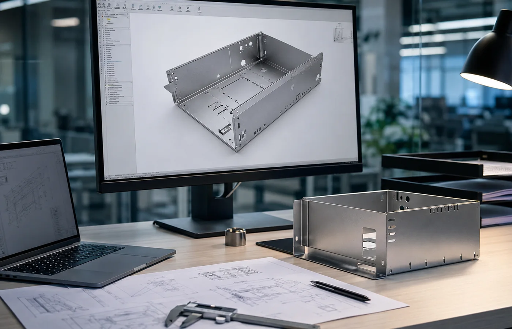
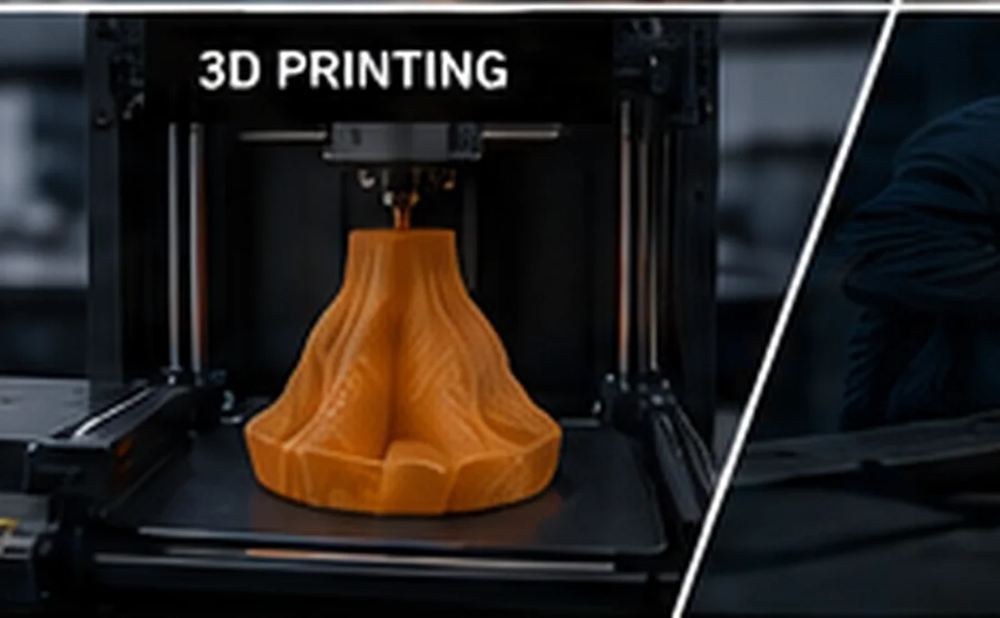
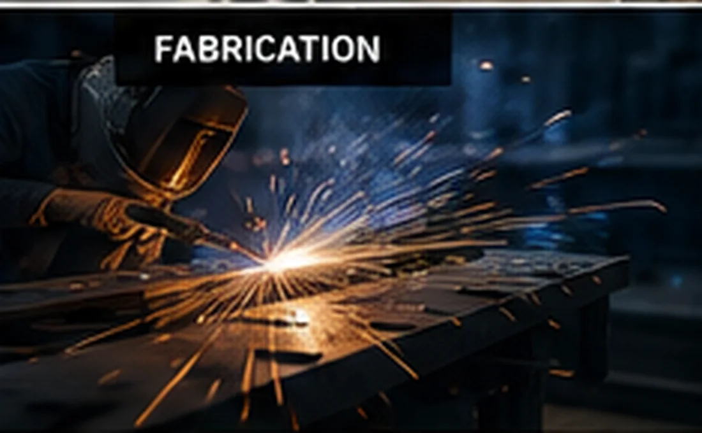
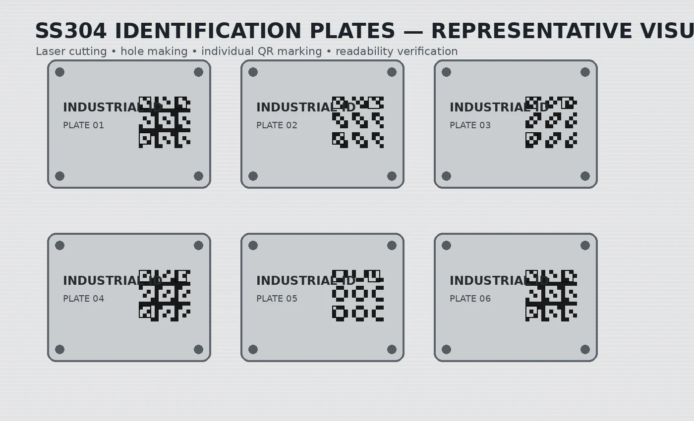

01
Understand
Start with a drawing, sample, photograph, machine issue or basic requirement.
From design and custom components to machine maintenance, automation, industrial spares, quality systems and business support — Crecer Grande helps manufacturing and engineering businesses solve practical industrial requirements.
Crecer Grande brings engineering, manufacturing, products, maintenance, automation, quality, tenders and inspection under one practical industrial-support platform.
Laser processes, fabrication, machining, 3D printing and custom components.
EXPLORE → 02CAD, drawings, DFM, reverse engineering, BOM and product-development support.
EXPLORE → 03Laser consumables, chiller spares, automation products and machine parts.
BROWSE → 04Breakdown, preventive maintenance and industrial troubleshooting support.
EXPLORE → 05PLCs, HMIs, Industrial IoT, modules and control-system support.
EXPLORE → 06ISO/QMS implementation, audit readiness and business-compliance support.
EXPLORE → 07Bid discovery, eligibility review, documentation and submission support.
EXPLORE → 08Dimensional, visual, pre-dispatch and vendor-quality support.
EXPLORE →We can start from different levels of information and then define what additional data is required before execution.
2D drawing, STEP, STL, DXF or manufacturing specification.
Existing or damaged component for measurement and reverse engineering.
Photos, machine nameplate or part markings for initial identification.
Tell us what the component or machine needs to do and we can discuss the route.
Browse grouped laser-system components, sheet-metal tooling, automation hardware and chiller-pump options. Compatibility is checked before quotation.
Every requirement does not need every stage. We select the route that fits the actual job and coordinate the stages that are genuinely required.

Start with a drawing, sample, photograph, machine issue or basic requirement.

Convert the requirement into CAD, drawings, specifications or reverse-engineered information where needed.

Prototype, inspect or review critical details before committing to the final route when validation adds value.
Manufacture, fabricate, machine, print or source the required component through the appropriate process.

Where the requirement is maintenance-related, troubleshoot the machine, controls, chiller or supporting system.
Check the agreed dimensions, condition, documentation or functional requirement before final supply.

Supply the product, component, documentation or agreed support and close the requirement clearly.
The website includes an indicative-estimate engine for products or services where a rate is configured. Items without published pricing automatically route to formal quotation instead of inventing a price.
